- Define Yukawa particle.
- State the Heisenberg uncertainty principle.
- Describe pion.
- Estimate the mass of a pion.
- Explain meson.
Particle physics as we know it today began with the ideas of Hideki Yukawa in 1935. Physicists had long been concerned with how forces are transmitted, finding the concept of fields, such as electric and magnetic fields to be very useful. A field surrounds an object and carries the force exerted by the object through space. Yukawa was interested in the strong nuclear force in particular and found an ingenious way to explain its short range. His idea is a blend of particles, forces, relativity, and quantum mechanics that is applicable to all forces. Yukawa proposed that force is transmitted by the exchange of particles (calledcarrier particles). The field consists of these carrier particles.
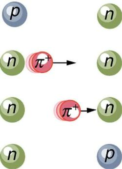
Specifically for the strong nuclear force, Yukawa proposed that a previously unknown particle, now called apion, is exchanged between nucleons, transmitting the force between them. Figure illustrates how a pion would carry a force between a proton and a neutron. The pion has mass and can only be created by violating the conservation of mass-energy. This is allowed by the Heisenberg uncertainty principle if it occurs for a sufficiently short period of time. As discussed inProbability: The Heisenberg Uncertainty Principlethe Heisenberg uncertainty principle relates the uncertainties \(ΔE\) in energy and \(Δt\) in time by
where \(h\) is Planck’s constant. Therefore, conservation of mass-energy can be violated by an amount \(ΔE\) for a time \(Δt≈\frac{h}{4πΔE}\) in which time no process can detect the violation. This allows the temporary creation of a particle of mass m, where \(ΔE=mc^2\). The larger the mass and the greater the \(ΔE\), the shorter is the time it can exist. This means the range of the force is limited, because the particle can only travel a limited distance in a finite amount of time. In fact, the maximum distance is \(d≈cΔt\), where \(c\) is the speed of light. The pion must then be captured and, thus, cannot be directly observed because that would amount to a permanent violation of mass-energy conservation. Such particles (like the pion above) are calledvirtual particles, because they cannot be directly observed but theireffectscan be directly observed. Realizing all this, Yukawa used the information on the range of the strong nuclear force to estimate the mass of the pion, the particle that carries it. The steps of his reasoning are approximately retraced in the following worked example:
Taking the range of the strong nuclear force to be about 1 fermi (\(10^{−15}\)m), calculate the approximate mass of the pion carrying the force, assuming it moves at nearly the speed of light.
The calculation is approximate because of the assumptions made about the range of the force and the speed of the pion, but also because a more accurate calculation would require the sophisticated mathematics of quantum mechanics. Here, we use the Heisenberg uncertainty principle in the simple form stated above, as developed inProbability: The Heisenberg Uncertainty Principle. First, we must calculate the time \(Δt\) that the pion exists, given that the distance it travels at nearly the speed of light is about 1 fermi. Then, the Heisenberg uncertainty principle can be solved for the energy \(ΔE\), and from that the mass of the pion can be determined. We will use the units of \(MeV/c^2\) for mass, which are convenient since we are often considering converting mass to energy and vice versa.
The distance the pion travels is \(d≈cΔt\), and so the time during which it exists is approximately
Now, solving the Heisenberg uncertainty principle for \(ΔE\) gives
Solving this and converting the energy to MeV gives
Mass is related to energy by \(ΔE=mc^2\), so that the mass of the pion is \(m=ΔE/c^2\), or
This is about 200 times the mass of an electron and about one-tenth the mass of a nucleon. No such particles were known at the time Yukawa made his bold proposal.
Yukawa’s proposal of particle exchange as the method of force transfer is intriguing. But how can we verify his proposal if we cannot observe the virtual pion directly? If sufficient energy is in a nucleus, it would be possible to free the pion—that is, to create its mass from external energy input. This can be accomplished by collisions of energetic particles with nuclei, but energies greater than 100 MeV are required to conserve both energy and momentum. In 1947, pions were observed in cosmic-ray experiments, which were designed to supply a small flux of high-energy protons that may collide with nuclei. Soon afterward, accelerators of sufficient energy were creating pions in the laboratory under controlled conditions. Three pions were discovered, two with charge and one neutral, and given the symbols \(π^+\),\(π^−\), and \(π^0\), respectively. The masses of \(π^+\) and \(π^−\) are identical at \(139.6\, MeV/c^2\), whereas \(π^0\) has a mass of \(135.0MeV/c^2\). These masses are close to the predicted value of \(100\,MeV/c^2\) and, since they are intermediate between electron and nucleon masses, the particles are given the namemeson(now an entire class of particles, as we shall see inParticles, Patterns, and Conservation Laws).
The pions, or \(π^-\)mesons as they are also called, have masses close to those predicted and feel the strong nuclear force. Another previously unknown particle, now called the muon, was discovered during cosmic-ray experiments in 1936 (one of its discoverers, Seth Neddermeyer, also originated the idea of implosion for plutonium bombs). Since the mass of a muon is around \(106\, MeV/c^2\), at first it was thought to be the particle predicted by Yukawa. But it was soon realized that muons do not feel the strong nuclear force and could not be Yukawa’s particle. Their role was unknown, causing the respected physicist I. I. Rabi to comment, “Who ordered that?” This remains a valid question today. We have discovered hundreds of subatomic particles; the roles of some are only partially understood. But there are various patterns and relations to forces that have led to profound insights into nature’s secrets.
📖 OpenStax College Physics, Section 33.1. openstax.org · CC BY 4.0
- State the four basic forces.
- Explain the Feynman diagram for the exchange of a virtual photon between two positive charges.
- Define QED.
- Describe the Feynman diagram for the exchange of a between a proton and a neutron.
As first discussed inProblem-Solving Strategiesand mentioned at various points in the text since then, there are only four distinct basic forces in all of nature. This is a remarkably small number considering the myriad phenomena they explain. Particle physics is intimately tied to these four forces. Certain fundamental particles, called carrier particles, carry these forces, and all particles can be classified according to which of the four forces they feel. The table given below summarizes important characteristics of the four basic forces.
| Force | Approximate relative strength | Range | +/− | Carrier particle |
|---|---|---|---|---|
| Gravity | \(10^{−38}\) | ∞ | + only | Graviton (conjectured) |
| Electromagnetic | \(10^{−2}\) | ∞ | +/− | Photon (observed) |
| Weak force | \(10^{−13}\) | < \(10^{−18}\) m | +/− | \(W^+,W^−,Z^0\)(observed) |
| Strong force | 1 | < \(10^{−15}\) m | +/− | Gluons (conjectured) |
Although these four forces are distinct and differ greatly from one another under all but the most extreme circumstances, we can see similarities among them. (InGUTs: the Unification of Forces, we will discuss how the four forces may be different manifestations of a single unified force.) Perhaps the most important characteristic among the forces is that they are all transmitted by the exchange of a carrier particle, exactly like what Yukawa had in mind for the strong nuclear force. Each carrier particle is a virtual particle—it cannot be directly observed while transmitting the force. Figure shows the exchange of a virtual photon between two positive charges. The photon cannot be directly observed in its passage, because this would disrupt it and alter the force.
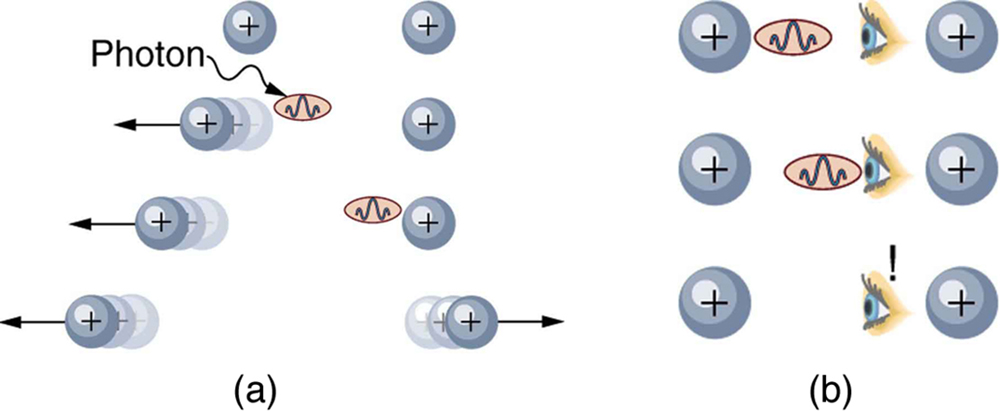
Figure shows a way of graphing the exchange of a virtual photon between two positive charges. This graph of time versus position is called aFeynman diagram, after the brilliant American physicist Richard Feynman (1918–1988) who developed it.
Figure is a Feynman diagram for the exchange of a virtual pion between a proton and a neutron representing the same interaction as in[link]. Feynman diagrams are not only a useful tool for visualizing interactions at the quantum mechanical level, they are also used to calculate details of interactions, such as their strengths and probability of occurring. Feynman was one of the theorists who developed the field ofquantum electrodynamics(QED), which is the quantum mechanics of electromagnetism. QED has been spectacularly successful in describing electromagnetic interactions on the submicroscopic scale. Feynman was an inspiring teacher, had a colorful personality, and made a profound impact on generations of physicists. He shared the 1965 Nobel Prize with Julian Schwinger and S. I. Tomonaga for work in QED with its deep implications for particle physics.
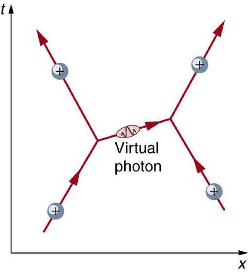
Why is it that particles called gluons are listed as the carrier particles for the strong nuclear force when, inThe Yukawa Particle and the Heisenberg Uncertainty Principle Revisited, we saw that pions apparently carry that force? The answer is that pions are exchanged but they have a substructure and, as we explore it, we find that the strong force is actually related to the indirectly observed but more fundamentalgluons. In fact, all the carrier particles are thought to be fundamental in the sense that they have no substructure. Another similarity among carrier particles is that they are all bosons (first mentioned inPatterns in Spectra Reveal More Quantization), having integral intrinsic spins.
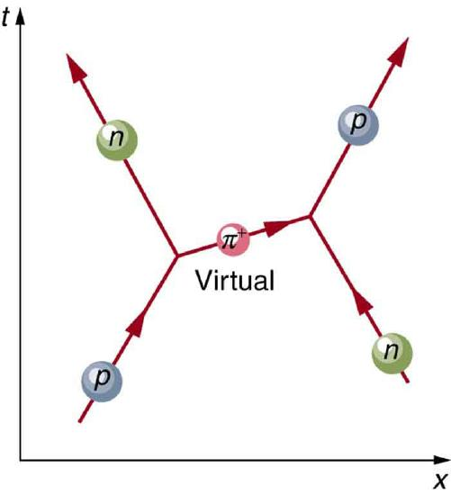
There is a relationship between the mass of the carrier particle and the range of the force. The photon is massless and has energy. So, the existence of (virtual) photons is possible only by virtue of the Heisenberg uncertainty principle and can travel an unlimited distance. Thus, the range of the electromagnetic force is infinite. This is also true for gravity. It is infinite in range because its carrier particle, the graviton, has zero rest mass. (Gravity is the most difficult of the four forces to understand on a quantum scale because it affects the space and time in which the others act. But gravity is so weak that its effects are extremely difficult to observe quantum mechanically. We shall explore it further inGeneral Relativity and Quantum Gravity). The \(W^+,W^−\), and \(Z^0\) particles that carry the weak nuclear force have mass, accounting for the very short range of this force. In fact, the \(W^+,W^−\), and \(Z^0\) are about 1000 times more massive than pions, consistent with the fact that the range of the weak nuclear force is about 1/1000 that of the strong nuclear force. Gluons are actually massless, but since they act inside massive carrier particles like pions, the strong nuclear force is also short ranged.
The relative strengths of the forces given in theTableare those for the most common situations. When particles are brought very close together, the relative strengths change, and they may become identical at extremely close range. As we shall see inGUTs: the Unification of Forces, carrier particles may be altered by the energy required to bring particles very close together—in such a manner that they become identical.
📖 OpenStax College Physics, Section 33.2. openstax.org · CC BY 4.0
- State the principle of a cyclotron.
- Explain the principle of a synchrotron.
- Describe the voltage needed by an accelerator between accelerating tubes.
- State Fermilab’s accelerator principle.
Before looking at all the particles we now know about, let us examine some of the machines that created them. The fundamental process in creating previously unknown particles is to accelerate known particles, such as protons or electrons, and direct a beam of them toward a target. Collisions with target nuclei provide a wealth of information, such as information obtained by Rutherford using energetic helium nuclei from natural \(α\) radiation. But if the energy of the incoming particles is large enough, new matter is sometimes created in the collision. The more energy input or \(ΔE\), the more matter \(m\) can be created, since \(m=ΔE/c^2\). Limitations are placed on what can occur by known conservation laws, such as conservation of mass-energy, momentum, and charge. Even more interesting are the unknown limitations provided by nature. Some expected reactions do occur, while others do not, and still other unexpected reactions may appear. New laws are revealed, and the vast majority of what we know about particle physics has come from accelerator laboratories. It is the particle physicist’s favorite indoor sport, which is partly inspired by theory.
An early accelerator is a relatively simple, large-scale version of the electron gun. TheVan de Graaff(named after the Dutch physicist), which you have likely seen in physics demonstrations, is a small version of the ones used for nuclear research since their invention for that purpose in 1932 (Figure . These machines are electrostatic, creating potentials as great as 50 MV, and are used to accelerate a variety of nuclei for a range of experiments. Energies produced by Van de Graaffs are insufficient to produce new particles, but they have been instrumental in exploring several aspects of the nucleus.
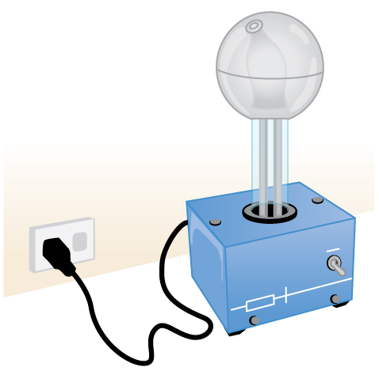
Another, equally famous, early accelerator is thecyclotron, invented in 1930 by the American physicist, E. O. Lawrence (1901–1958). For a visual representation with more detail, see Figure . Cyclotrons use fixed-frequency alternating electric fields to accelerate particles. The particles spiral outward in a magnetic field, making increasingly larger radius orbits during acceleration. This clever arrangement allows the successive addition of electric potential energy and so greater particle energies are possible than in a Van de Graaff. Lawrence was involved in many early discoveries and in the promotion of physics programs in American universities. He was awarded the 1939 Nobel Prize in Physics for the cyclotron and nuclear activations, and he has an element and two major laboratories named for him.
![The image shows a disc-shaped cyclotron consisting of two horizontal semicircular plates that are separated by a gap. An alternating voltage is put across the gap, and an electric field is shown going from the left semicircular plate across the gap to the right semicircular plate. A magnetic field pierces the plates from top to bottom. A dotted line labeled external beam spirals outward from the center of the cyclotron, making four revolutions inside the semicircular plates before reaching the outer edge of the cyclotron.](images/ch33/fig33-8-the-image-shows-a-disc-shaped-cyclotron-.jpg)
Asynchrotronis a version of a cyclotron in which the frequency of the alternating voltage and the magnetic field strength are increased as the beam particles are accelerated. Particles are made to travel the same distance in a shorter time with each cycle in fixed-radius orbits. A ring of magnets and accelerating tubes, as shown in Figure , are the major components of synchrotrons. Accelerating voltages are synchronized (i.e., occur at the same time) with the particles to accelerate them, hence the name. Magnetic field strength is increased to keep the orbital radius constant as energy increases. High-energy particles require strong magnetic fields to steer them, so superconducting magnets are commonly employed. Still limited by achievable magnetic field strengths, synchrotrons need to be very large at very high energies, since the radius of a high-energy particle’s orbit is very large. Radiation caused by a magnetic field accelerating a charged particle perpendicular to its velocity is calledsynchrotron radiationin honor of its importance in these machines. Synchrotron radiation has a characteristic spectrum and polarization, and can be recognized in cosmic rays, implying large-scale magnetic fields acting on energetic and charged particles in deep space. Synchrotron radiation produced by accelerators is sometimes used as a source of intense energetic electromagnetic radiation for research purposes.
Physicists have built ever-larger machines, first to reduce the wavelength of the probe and obtain greater detail, then to put greater energy into collisions to create new particles. Each major energy increase brought new information, sometimes producing spectacular progress, motivating the next step. One major innovation was driven by the desire to create more massive particles. Since momentum needs to be conserved in a collision, the particles created by a beam hitting a stationary target should recoil. This means that part of the energy input goes into recoil kinetic energy, significantly limiting the fraction of the beam energy that can be converted into new particles. One solution to this problem is to have head-on collisions between particles moving in opposite directions.Collidingbeamsare made to meet head-on at points where massive detectors are located. Since the total incoming momentum is zero, it is possible to create particles with momenta and kinetic energies near zero. Particles with masses equivalent to twice the beam energy can thus be created. Another innovation is to create the antimatter counterpart of the beam particle, which thus has the opposite charge and circulates in the opposite direction in the same beam pipe. For a schematic representation, see Figure .
![The first image shows a circular ring made up of about thirty blue tubes whose diameters are much less than the diameter of the ring. The tubes are arranged end-to-end, so that a line joining their axes forms the ring. The second image shows a close-up view of three consecutive tubes, which we shall call tubes one, two, and three. Tube one is labeled plus, tube two is labeled minus, and tube three is labeled plus. An arrow labeled E points from tube one to tube two, and between these two tubes is a sphere labeled p plus. The third image is the same as the second, except that the tubes one, two, and three are labeled minus, plus, minus, respectively. In addition, the arrow labeled E between tubes one and two has reversed direction, and a second arrow labeled E now appears pointing from tube two to tube three. Between tubes two and three appears the sphere labeled p plus.](images/ch33/fig33-9-the-first-image-shows-a-circular-ring-ma.jpg)
Detectors capable of finding the new particles in the spray of material that emerges from colliding beams are as impressive as the accelerators. While the Fermilab Tevatron had proton and antiproton beam energies of about 1 TeV, so that it can create particles up to 2 \(TeV/c^2\), the Large Hadron Collider (LHC) at the European Center for Nuclear Research (CERN) has achieved beam energies of 3.5 TeV, so that it has a 7-TeV collision energy; CERN hopes to double the beam energy in 2014. The now-canceled Superconducting Super Collider was being constructed in Texas with a design energy of 20 TeV to give a 40-TeV collision energy. It was to be an oval 30 km in diameter. Its cost as well as the politics of international research funding led to its demise.
Figure : This schematic shows the two rings of Fermilab’s accelerator and the scheme for colliding protons and antiprotons (not to scale).
![On the left side of the image is a pair of equal-diameter, horizontal rings, with one labeled proton source and the other labeled anti proton source. The rings look like they are made of a hose; that is, their cross section is circular and they appear hollow. In the proton-source ring blue arrows appear indicating counterclockwise motion inside the hose. In the anti-proton-source ring, red arrows appear indicating clockwise motion inside the hose. A section of hose tangentially leaves each ring to tangentially join another larger ring to the right, which is labeled main ring. Both blue arrows and red arrows appear in the main ring, indicating simultaneous clockwise and counterclockwise motion. From the main ring two tangential hose sections exit to join a similar-sized ring situated beneath the main ring and that is labeled tevatron ring. In the tevatron ring, the blue arrows go half-way around clockwise and the red arrows go half-way around counterclockwise. They meet in a cube labeled collision detector and that has a yellow starburst icon on it.](images/ch33/fig33-10-on-the-left-side-of-the-image-is-a-pair-.jpg)
In addition to the large synchrotrons that produce colliding beams of protons and antiprotons, there are other large electron-positron accelerators. The oldest of these was a straight-line or linear accelerator, called the Stanford Linear Accelerator (SLAC), which accelerated particles up to 50 GeV as seen in Figure. Positrons created by the accelerator were brought to the same energy and collided with electrons in specially designed detectors. Linear accelerators use accelerating tubes similar to those in synchrotrons, but aligned in a straight line. This helps eliminate synchrotron radiation losses, which are particularly severe for electrons made to follow curved paths. CERN had an electron-positron collider appropriately called the Large Electron-Positron Collider (LEP), which accelerated particles to 100 GeV and created a collision energy of 200 GeV. It was 8.5 km in diameter, while the SLAC machine was 3.2 km long.
Figure \(\PageIndex{5 }\):The Stanford Linear Accelerator was 3.2 km long and had the capability of colliding electron and positron beams. SLAC was also used to probe nucleons by scattering extremely short wavelength electrons from them. This produced the first convincing evidence of a quark structure inside nucleons in an experiment analogous to those performed by Rutherford long ago.
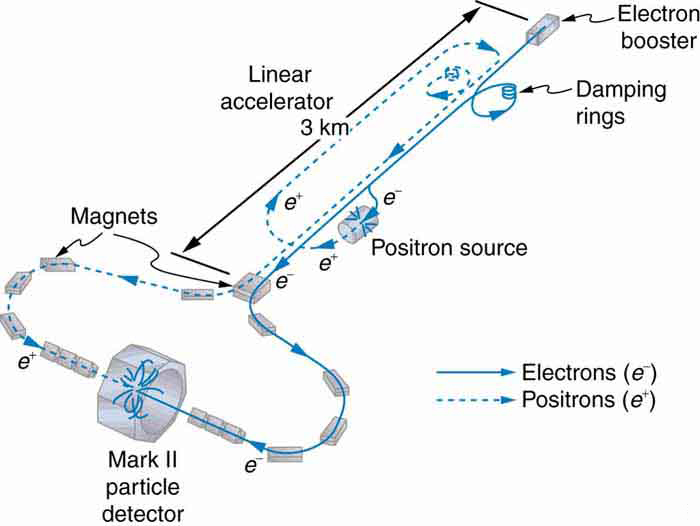
A linear accelerator designed to produce a beam of 800-MeV protons has 2000 accelerating tubes. What average voltage must be applied between tubes (such as in the gaps in Figure) to achieve the desired energy?
The energy given to the proton in each gap between tubes is \(PE_{elec}=qV\) where \(q\) is the proton’s charge and \(V\) is the potential difference (voltage) across the gap. Since \(q=q_e=1.6×10^{−19}C\) and \(1 eV=(1 V)(1.6×10^{−19}C)\), the proton gains 1 eV in energy for each volt across the gap that it passes through. The AC voltage applied to the tubes is timed so that it adds to the energy in each gap. The effective voltage is the sum of the gap voltages and equals 800 MV to give each proton an energy of 800 MeV.
There are 2000 gaps and the sum of the voltages across them is 800 MV; thus,
A voltage of this magnitude is not difficult to achieve in a vacuum. Much larger gap voltages would be required for higher energy, such as those at the 50-GeV SLAC facility. Synchrotrons are aided by the circular path of the accelerated particles, which can orbit many times, effectively multiplying the number of accelerations by the number of orbits. This makes it possible to reach energies greater than 1 TeV.
📖 OpenStax College Physics, Section 33.3. openstax.org · CC BY 4.0
- Define matter and antimatter.
- Outline the differences between hadrons and leptons.
- State the differences between mesons and baryons.
In the early 1930s only a small number of subatomic particles were known to exist—the proton, neutron, electron, photon and, indirectly, the neutrino. Nature seemed relatively simple in some ways, but mysterious in others. Why, for example, should the particle that carries positive charge be almost 2000 times as massive as the one carrying negative charge? Why does a neutral particle like the neutron have a magnetic moment? Does this imply an internal structure with a distribution of moving charges? Why is it that the electron seems to have no size other than its wavelength, while the proton and neutron are about 1 fermi in size? So, while the number of known particles was small and they explained a great deal of atomic and nuclear phenomena, there were many unexplained phenomena and hints of further substructures.
Things soon became more complicated, both in theory and in the prediction and discovery of new particles. In 1928, the British physicist P.A.M. Dirac (Figure developed a highly successful relativistic quantum theory that laid the foundations of quantum electrodynamics (QED). His theory, for example, explained electron spin and magnetic moment in a natural way. But Dirac’s theory also predicted negative energy states for free electrons. By 1931, Dirac, along with Oppenheimer, realized this was a prediction of positively charged electrons (or positrons). In 1932, American physicist Carl Anderson discovered the positron in cosmic ray studies. The positron, or \(e^+\), is the same particle as emitted in \(β^+\) decay and was the first antimatter that was discovered. In 1935, Yukawa predicted pions as the carriers of the strong nuclear force, and they were eventually discovered. Muons were discovered in cosmic ray experiments in 1937, and they seemed to be heavy, unstable versions of electrons and positrons. After World War II, accelerators energetic enough to create these particles were built. Not only were predicted and known particles created, but many unexpected particles were observed. Initially called elementary particles, their numbers proliferated to dozens and then hundreds, and the term “particle zoo” became the physicist’s lament at the lack of simplicity. But patterns were observed in the particle zoo that led to simplifying ideas such as quarks, as we shall soon see.
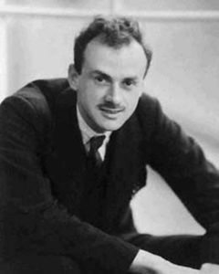
The positron was only the first example of antimatter. Every particle in nature has an antimatter counterpart, although some particles, like the photon, are their own antiparticles. Antimatter has charge opposite to that of matter (for example, the positron is positive while the electron is negative) but is nearly identical otherwise, having the same mass, intrinsic spin, half-life, and so on. When a particle and its antimatter counterpart interact, they annihilate one another, usually totally converting their masses to pure energy in the form of photons as seen in Figure .
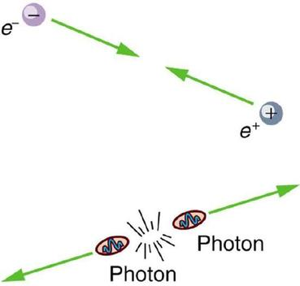
Neutral particles, such as neutrons, have neutral antimatter counterparts, which also annihilate when they interact. Certain neutral particles are their own antiparticle and live correspondingly short lives. For example, the neutral pion \(π^0\) is its own antiparticle and has a half-life about \(10^{−8}\) shorter than \(π^+\) and \(π^−\), which are each other’s antiparticles. Without exception, nature is symmetric—all particles have antimatter counterparts. For example, antiprotons and antineutrons were first created in accelerator experiments in 1956 and the antiproton is negative. Antihydrogen atoms, consisting of an antiproton and antielectron, were observed in 1995 at CERN, too. It is possible to contain large-scale antimatter particles such as antiprotons by using electromagnetic traps that confine the particles within a magnetic field so that they don't annihilate with other particles. However, particles of the same charge repel each other, so the more particles that are contained in a trap, the more energy is needed to power the magnetic field that contains them. It is not currently possible to store a significant quantity of antiprotons. At any rate, we now see that negative charge is associated with both low-mass (electrons) and high-mass particles (antiprotons) and the apparent asymmetry is not there. But this knowledge does raise another question—why is there such a predominance of matter and so little antimatter? Possible explanations emerge later in this and the next chapter.
Particles can also be revealingly grouped according to what forces they feel between them. All particles (even those that are massless) are affected by gravity, since gravity affects the space and time in which particles exist. All charged particles are affected by the electromagnetic force, as are neutral particles that have an internal distribution of charge (such as the neutron with its magnetic moment). Special names are given to particles that feel the strong and weak nuclear forces.Hadronsare particles that feel the strong nuclear force, whereasleptonsare particles that do not. The proton, neutron, and the pions are examples of hadrons. The electron, positron, muons, and neutrinos are examples of leptons, the name meaning low mass. Leptons feel the weak nuclear force. In fact, all particles feel the weak nuclear force. This means that hadrons are distinguished by being able to feel both the strong and weak nuclear forces.
Table lists the characteristics of some of the most important subatomic particles, including the directly observed carrier particles for the electromagnetic and weak nuclear forces, all leptons, and some hadrons. Several hints related to an underlying substructure emerge from an examination of these particle characteristics. Note that the carrier particles are calledgauge bosons. First mentioned inPatterns in Spectra Reveal More Quantization, abosonis a particle with zero or an integer value of intrinsic spin (such as s=0, 1, 2, ...), whereas afermionis a particle with a half-integer value of intrinsic spin (s=1/2,3/2,...). Fermions obey the Pauli exclusion principle whereas bosons do not. All the known and conjectured carrier particles are bosons.
| Category | Particle Name | Symbol | Antiparticle | Rest Mass | B | \(L_e\) | \(L_μ\) | \(L_τ\) | S | Lifetime (s) |
|---|---|---|---|---|---|---|---|---|---|---|
| Gauge | Photon | γ | Self | 0 | 0 | 0 | 0 | 0 | 0 | Stable |
| Bosons | \(W\) | \(W^+\) | \(W^−\) | \(80.39×10^3\) | 0 | 0 | 0 | 0 | 0 | \(1.6×10^{−25}\) |
| \(Z\) | \(z^0\) | Self | \(90.19×10^3\) | 0 | 0 | 0 | 0 | 0 | \(1.32×10^{−25}\) | |
| Leptons | Electron | \(e^−\) | \(e^+\) | 0.511 | 0 | \(±1\) | 0 | 0 | 0 | Stable |
| Neutrino (e) | \(ν_e\) | \(\bar{ν_e}\) | 0 (7.0eV) | 0 | \(±1\) | 0 | 0 | 0 | Stable | |
| Muon | \(μ^−\) | \(μ^+\) | 105.7 | 0 | 0 | \(±1\) | 0 | 0 | \(2.20×10^{−6}\) | |
| Neutrino(\(μ\)) | \(v_μ\) | \(\bar{v_μ}\) | 0 (<0.27) | 0 | 0 | \(±1\) | 0 | 0 | Stable | |
| Tau | \(τ^−\) | \(τ^+\) | 1777 | 0 | 0 | 0 | \(±1\) | 0 | \(2.91×10^{−13}\) | |
| Neutrino(\(τ\)) | \(v_τ\) | \(\bar{v_τ}\) | 0 (<31) | 0 | 0 | 0 | \(±1\) | 0 | Stable | |
| Hadrons(selected) | ||||||||||
| Mesons | Pion | \(π^+\) | \(π^−\) | 139.6 | 0 | 0 | 0 | 0 | 0 | \(2.60 × 10^{−8}\) |
| \(π^0\) | Self | 135.0 | 0 | 0 | 0 | 0 | 0 | \(8.4 × 10^{−17}\) | ||
| Kaon | \(K^+\) | \(K^−\) | 493.7 | 0 | 0 | 0 | 0 | \(±1\) | \(1.24 × 10^{−8}\) | |
| \(K^0\) | \(\bar{K}^0\) | 497.6 | 0 | 0 | 0 | 0 | \(±1\) | \(0.90 × 10^{−10}\) | ||
| Eta | \(η^0\) | Self | 547.9 | 0 | 0 | 0 | 0 | 0 | \(2.53 × 10^{−19}\) | |
| (many other mesons known) | ||||||||||
| Baryons | Pronton | \(p\) | \(\bar{p}\) | 938.3 | \(±1\) | 0 | 0 | 0 | 0 | Stable |
| Neutron | \(n\) | \(\bar{n}\) | 936.6 | \(±1\) | 0 | 0 | 0 | 0 | 882 | |
| Lambda | \(Λ^0\) | \(\bar{Λ}^0\) | 1115.7 | \(±1\) | 0 | 0 | 0 | \(±1\) | \(2.63 × 10^{−10}\) | |
| Sigma | \(Σ^+\) | \(\bar{Σ}^−\) | 1189.4 | \(±1\) | 0 | 0 | 0 | \(±1\) | \(0.80 × 10^{−10}\) | |
| \(Σ^0\) | \(\bar{Σ}^0\) | 1192.6 | \(±1\) | 0 | 0 | 0 | \(±1\) | \(7.4 × 10^{−20}\) | ||
| \(Σ^−\) | \(\bar{Σ}^+\) | 1197.4 | \(±1\) | 0 | 0 | 0 | \(±1\) | \(1.48 × 10^{−10}\) | ||
| Xi | \(Ξ^0\) | \(\bar{Ξ}^−\) | 1314.9 | \(±1\) | 0 | 0 | 0 | \(±2\) | \(2.90 × 10^{−10}\) | |
| \(Ξ^−\) | \(Ξ^+\) | 1321.7 | \(±1\) | 0 | 0 | 0 | \(±2\) | \(1.64 × 10^{−10}\) | ||
| Omega | \(Ω^−\) | \(Ω^+\) | 1672.5 | \(±1\) | 0 | 0 | 0 | \(±3\) | \(0.82 × 10^{−10}\) | |
| (many other baryons known) | ||||||||||
| Rest mass is in unites of (\(MeV/c^2\)). |
All known leptons are listed in the table given above. There are only six leptons (and their antiparticles), and they seem to be fundamental in that they have no apparent underlying structure. Leptons have no discernible size other than their wavelength, so that we know they are pointlike down to about \(10^{−18}m\). The leptons fall into three families, implying three conservation laws for three quantum numbers. One of these was known from β decay, where the existence of the electron’s neutrino implied that a new quantum number, called theelectron family number\(L_e\) is conserved. Thus, in \(β\) decay, an antielectron’s neutrino \(\bar{v_e}\) must be created with \(L_e=−1\) when an electron with \(L_e=+1\) is created, so that the total remains 0 as it was before decay.
Once the muon was discovered in cosmic rays, its decay mode was found to be
which implied another “family” and associated conservation principle. The particle vμ is a muon’s neutrino, and it is created to conservemuon familynumber\(L_μ\). So muons are leptons with a family of their own, andconservation of total\(L_μ\) also seems to be obeyed in many experiments.
More recently, a third lepton family was discovered when τ particles were created and observed to decay in a manner similar to muons. One principal decay mode is
Conservation of total\(L_τ\) seems to be another law obeyed in many experiments. In fact, particle experiments have found that lepton family number is not universally conserved, due to neutrino “oscillations,” or transformations of neutrinos from one family type to another.
Now, note that the hadrons in the table given above are divided into two subgroups, called mesons (originally for medium mass) and baryons (the name originally meaning large mass). The division between mesons and baryons is actually based on their observed decay modes and is not strictly associated with their masses.Mesonsare hadrons that can decay to leptons and leave no hadrons, which implies that mesons are not conserved in number.Baryonsare hadrons that always decay to another baryon. A new physical quantity calledbaryon number\(B\) seems to always be conserved in nature and is listed for the various particles in the table given above. Mesons and leptons have \(B=0\) so that they can decay to other particles with \(B=0\). But baryons have \(B=+1\) if they are matter, and \(B=−1\) if they are antimatter. Theconservation of total baryon numberis a more general rule than first noted in nuclear physics, where it was observed that the total number of nucleons was always conserved in nuclear reactions and decays. That rule in nuclear physics is just one consequence of the conservation of the total baryon number.
The forces that act between particles regulate how they interact with other particles. For example, pions feel the strong force and do not penetrate as far in matter as do muons, which do not feel the strong force. (This was the way those who discovered the muon knew it could not be the particle that carries the strong force—its penetration or range was too great for it to be feeling the strong force.) Similarly, reactions that create other particles, like cosmic rays interacting with nuclei in the atmosphere, have greater probability if they are caused by the strong force than if they are caused by the weak force. Such knowledge has been useful to physicists while analyzing the particles produced by various accelerators.
The forces experienced by particles also govern how particles interact with themselves if they are unstable and decay. For example, the stronger the force, the faster they decay and the shorter is their lifetime. An example of a nuclear decay via the strong force is \(^8Be→α+α\) with a lifetime of about \(10^{−16}s\). The neutron is a good example of decay via the weak force. The process \(n→p+e^−+\bar{v_e}\) has a longer lifetime of 882 s. The weak force causes this decay, as it does all \(β\) decay. An important clue that the weak force is responsible for \(β\) decay is the creation of leptons, such as \(e^−\) and \(\bar{v_e}\). None would be created if the strong force was responsible, just as no leptons are created in the decay of \(^8Be\). The systematics of particle lifetimes is a little simpler than nuclear lifetimes when hundreds of particles are examined (not just the ones in the table given above). Particles that decay via the weak force have lifetimes mostly in the range of \(10^{−16}\) to \(10^{−12}\) s, whereas those that decay via the strong force have lifetimes mostly in the range of \(10^{−16}\) to \(10^{−23}\) s. Turning this around, if we measure the lifetime of a particle, we can tell if it decays via the weak or strong force.
Yet another quantum number emerges from decay lifetimes and patterns. Note that the particles \(Λ,Σ,Ξ,\) and \(Ω\) decay with lifetimes on the order of \(10^{−10}\) s (the exception is \(Σ^0\), whose short lifetime is explained by its particular quark substructure.), implying that their decay is caused by the weak force alone, although they are hadrons and feel the strong force. The decay modes of these particles also show patterns—in particular, certain decays that should be possible within all the known conservation laws do not occur. Whenever something is possible in physics, it will happen. If something does not happen, it is forbidden by a rule. All this seemed strange to those studying these particles when they were first discovered, so they named a new quantum numberstrangeness, given the symbol \(S\) in the table given above. The values of strangeness assigned to various particles are based on the decay systematics. It is found thatstrangeness is conserved by the strong force, which governs the production of most of these particles in accelerator experiments. However,strangeness isnot conservedby the weak force. This conclusion is reached from the fact that particles that have long lifetimes decay via the weak force and do not conserve strangeness. All of this also has implications for the carrier particles, since they transmit forces and are thus involved in these decays.
In part (a), the conservation laws can be examined by adding the quantum numbers of the decay products and comparing them with the parent particle. In part (b), the same procedure can reveal if a conservation law is broken or not.
Before the decay, the \(Ξ^−\) has strangeness \(S=−2\). After the decay, the total strangeness is \(–1\) for the \(Λ^0\), plus 0 for the \(π^−\). Thus, total strangeness has gone from –2 to –1 or a change of +1. Baryon number for the \(Ξ^−\) is \(B=+1\) before the decay, and after the decay the \(Λ^0\) has \(B=+1\) and the \(π^−\) has \(B=0\) so that the total baryon number remains \(+1\). Charge is \(–1\) before the decay, and the total charge after is also \(0−1=−1\). Lepton numbers for all the particles are zero, and so lepton numbers are conserved.
The \(Ξ^−\) decay is caused by the weak interaction, since strangeness changes, and it is consistent with the relatively long \(1.64×10^{−10}-s\) lifetime of the \(Ξ^−\).
The decay \(K^+→μ^++ν)μ\) is allowed if charge, baryon number, mass-energy, and lepton numbers are conserved. Strangeness can change due to the weak interaction. Charge is conserved as \(s→d\). Baryon number is conserved, since all particles have \(B=0\).Mass-energy is conserved in the sense that the \(K^+\) has a greater mass than the products, so that the decay can be spontaneous. Lepton family numbers are conserved at 0 for the electron and tau family for all particles. The muon family number is \(L_μ=0\) before and \(L_μ=−1+1=0\) after. Strangeness changes from \(+1\) before to 0 + 0 after, for an allowed change of 1. The decay is allowed by all these measures.
This decay is not only allowed by our reckoning, it is, in fact, the primary decay mode of the \(K^+\) meson and is caused by the weak force, consistent with the long \(1.24×10^{−8}-s\) lifetime.
There are hundreds of particles, all hadrons, not listed in Table , most of which have shorter lifetimes. The systematics of those particle lifetimes, their production probabilities, and decay products are completely consistent with the conservation laws noted for lepton families, baryon number, and strangeness, but they also imply other quantum numbers and conservation laws. There are a finite, and in fact relatively small, number of these conserved quantities, however, implying a finite set of substructures. Additionally, some of these short-lived particles resemble the excited states of other particles, implying an internal structure. All of this jigsaw puzzle can be tied together and explained relatively simply by the existence of fundamental substructures. Leptons seem to be fundamental structures. Hadrons seem to have a substructure called quarks.Quarks: Is That All There Is?explores the basics of the underlying quark building blocks.
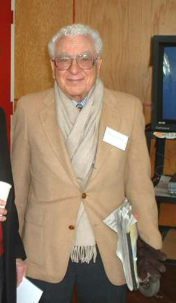
📖 OpenStax College Physics, Section 33.4. openstax.org · CC BY 4.0
- Define fundamental particle.
- Describe quark and antiquark.
- List the flavors of quark.
- Outline the quark composition of hadrons.
- Determine quantum numbers from quark composition.
Quarks have been mentioned at various points in this text as fundamental building blocks and members of the exclusive club of truly elementary particles. Note that an elementary orfundamental particlehas no substructure (it is not made of other particles) and has no finite size other than its wavelength. This does not mean that fundamental particles are stable—some decay, while others do not. Keep in mind thatallleptons seem to be fundamental, whereasnohadrons are fundamental. There is strong evidence thatquarksare the fundamental building blocks of hadrons as seen in Figure . Quarks are the second group of fundamental particles (leptons are the first). The third and perhaps final group of fundamental particles is the carrier particles for the four basic forces. Leptons, quarks, and carrier particles may be all there is. In this module we will discuss the quark substructure of hadrons and its relationship to forces as well as indicate some remaining questions and problems.
![The figure shows four spheres that are labeled proton, neutron, positive pion, and negative pion. The proton sphere contains a blue up quark with spin up, a green down quark with spin down, and a red up quark with spin up. Below the figure are two equations. The upper equation is labeled spin and reads one half plus one half minus one half equals one half, and the lower equation is labeled charge and reads plus two thirds plus two thirds minus one third equals one. The neutron sphere contains a green up quark with spin down, a blue down quark with spin up, and a red down quark with spin up. The corresponding spin equation reads minus one half plus one half plus one half equals one half, and the charge equation reads plus two thirds minus one third minus one third equals zero. The positive pion sphere contains a red up quark with spin up and an anti red anti down quark with spin down. The corresponding spin equation reads plus one half minus one half equals zero, and the charge equation reads plus two thirds plus one third equals plus one. The negative pion sphere contains a green anti up quark with spin up and an anti green down quark with spin down. The corresponding spin equation reads plus one half minus one half equals zero, and the charge equation reads minus two thirds minus one third equals minus one.](images/ch33/fig33-15-the-figure-shows-four-spheres-that-are-l.jpg)
Quarks were first proposed independently by American physicists Murray Gell-Mann and George Zweig in 1963. Their quaint name was taken by Gell-Mann from a James Joyce novel—Gell-Mann was also largely responsible for the concept and name of strangeness. (Whimsical names are common in particle physics, reflecting the personalities of modern physicists.) Originally, three quark types—orflavors—were proposed to account for the then-known mesons and baryons. These quark flavors are namedup(\(u\)),down(\(d\)), andstrange(\(s\)). All quarks have half-integral spin and are thus fermions. All mesons have integral spin while all baryons have half-integral spin. Therefore, mesons should be made up of an even number of quarks while baryons need to be made up of an odd number of quarks. Figure shows the quark substructure of the proton, neutron, and two pions. The most radical proposal by Gell-Mann and Zweig is the fractional charges of quarks, which are \(±(\frac{2}{3})q_e\) and \((\frac{1}{3})q_e\), whereas all directly observed particles have charges that are integral multiples of qe. Note that the fractional value of the quark does not violate the fact that theeis the smallest unit of charge that is observed, because a free quark cannot exist. Table lists characteristics of the six quark flavors that are now thought to exist. Discoveries made since 1963 have required extra quark flavors, which are divided into three families quite analogous to leptons.
| Name | Symbol | Antiparticle | Spin | Charge | B | S | c | b | t | Mass \((GeV/c^2)\) |
|---|---|---|---|---|---|---|---|---|---|---|
| Up | u | \(\bar{u}\) | 1/2 | \(±\frac{2}{3}q_e\) | \(±\frac{1}{3}\) | 0 | 0 | 0 | 0 | 0.005 |
| Down | d | \(\bar{d}\) | 1/2 | \(±\frac{1}{3}q_e\) | \(±\frac{1}{3}\) | 0 | 0 | 0 | 0 | 0.008 |
| Strange | s | \(\bar{s}\) | 1/2 | \(±\frac{1}{3}q_e\) | \(±\frac{1}{3}\) | \(±1\) | 0 | 0 | 0 | 0.50 |
| Charmed | c | \(\bar{c}\) | 1/2 | \(±\frac{2}{3}q_e\) | \(±\frac{1}{3}\) | 0 | \(±1\) | 0 | 0 | 1.6 |
| Bottom | b | \(\bar{b}\) | 1/2 | \(±\frac{1}{3}q_e\) | \(±\frac{1}{3}\) | 0 | 0 | \(±1\) | 0 | 5 |
| Top | t | \(\bar{t}\) | 1/2 | \(±\frac{2}{3}q_e\) | \(±\frac{1}{3}\) | 0 | 0 | 0 | \(±1\) | 173 |
To understand how these quark substructures work, let us specifically examine the proton, neutron, and the two pions pictured in Figure before moving on to more general considerations. First, the protonpis composed of the three quarksuud, so that its total charge is
as expected. With the spins aligned as in the figure, the proton’sintrinsic spinis
also as expected. Note that the spins of the up quarks are aligned, so that they would be in the same state except that they have differentcolors(another quantum number to be elaborated upon a little later). Quarks obey thePauli exclusion principle. Similar comments apply to the neutronn, which is composed of the three quarks \(udd\). Note also that the neutron is made of charges that add to zero but move internally, producing its well-known magnetic moment. When the neutron \(β^−\) decays, it does so by changing the flavor of one of its quarks. Writing neutron \(β^−\) decay in terms of quarks,
We see that this is equivalent to a down quark changing flavor to become an up quark:
\[d→u+β^−+\bar{v_e}\]This is an example of the general fact thatthe weak nuclear force can change the flavor of a quark. By general, we mean that any quark can be converted to any other (change flavor) by the weak nuclear force. Not only can we get \(d→u\), we can also get \(u→d\). Furthermore, the strange quark can be changed by the weak force, too, making \(s→u\) and \(s→d\) possible. This explains the violation of the conservation of strangeness by the weak force noted in the preceding section. Another general fact is thatthe strong nuclear force cannot change the flavor of a quark.
Again, from Figure , we see that the \(π^+\) meson (one of the three pions) is composed of an up quark plus an antidown quark, or \(u\bar{d}\). Its total charge is thus \(+(\frac{2}{3})q_e+(\frac{1}{3})q_e=q_e\), as expected. Its baryon number is 0, since it has a quark and an antiquark with baryon numbers \(+(\frac{1}{3})−(\frac{1}{3})=0\). The \(π^+\) half-life is relatively long since, although it is composed of matter and antimatter, the quarks are different flavors and the weak force should cause the decay by changing the flavor of one into that of the other. The spins of the \(u\) and \(\bar{d}\) quarks are antiparallel, enabling the pion to have spin zero, as observed experimentally. Finally, the \(π^−\) meson shown in Figure is the antiparticle of the \(π^+\) meson, and it is composed of the corresponding quark antiparticles. That is, the \(π^+\) meson is \(u\bar{d}\), while the \(π^−\) meson is \(u\bar{d}\). These two pions annihilate each other quickly, because their constituent quarks are each other’s antiparticles.
Two general rules for combining quarks to form hadrons are:
One of the clever things about this scheme is that only integral charges result, even though the quarks have fractional charge.
All quark combinations are possible and Table lists some of these combinations. When Gell-Mann and Zweig proposed the original three quark flavors, particles corresponding to all combinations of those three had not been observed. The pattern was there, but it was incomplete—much as had been the case in the periodic table of the elements and the chart of nuclides. The \(Ω^−\) particle, in particular, had not been discovered but was predicted by quark theory. Its combination of three strange quarks, \(sss\), gives it a strangeness of \(−3\) and other predictable characteristics, such as spin, charge, approximate mass, and lifetime. If the quark picture is complete, the \(Ω^−\) should exist. It was first observed in 1964 at Brookhaven National Laboratory and had the predicted characteristics as seen in Figure . The discovery of the \(Ω^−\) was convincing indirect evidence for the existence of the three original quark flavors and boosted theoretical and experimental efforts to further explore particle physics in terms of quarks.
| Particle | Quark Composition | Particle | Quark Composition |
|---|---|---|---|
| Mesons | Baryons | ||
| \(π^+\) | \(u\bar{d}\) | \(p\) | \(uud\) |
| \(π^−\) | \(\bar{u}d\) | \(n\) | \(udd\) |
| \(π^0\), mixture | \(u\bar{u}\)\(d\bar{d}\) | \(Δ^0\) | \(udd\) |
| \(η^0\), mixture | \(u\bar{u}\)\(d\bar{d}\) | \(Δ^+\) | \(uud\) |
| \(K^0\) | \(d\bar{s}\) | \(Δ^−\) | \(ddd\) |
| \(\bar{K}^0\) | \(\bar{d}s\) | \(Δ^{++}\) | \(uuu\) |
| \(K^+\) | \(u\bar{s}\) | \(Λ^0\) | \(uds\) |
| \(K^−\) | \(\bar{u}s\) | \(Σ^0\) | \(uds\) |
| \(J/ψ\) | \(c\bar{c}\) | \(Σ^+\) | \(uus\) |
| \(ϒ\) | \(b\bar{b}\) | \(Σ^−\) | \(dds\) |
| \(Ξ^0\) | \(uss\) | ||
| \(Ξ^−\) | \(dss\) | ||
| \(Ω^−\) | \(sss\) |
PATTERNS AND PUZZLES: ATOMS, NUCLEI, AND QUARKS
Patterns in the properties of atoms allowed theperiodic tableto be developed. From it, previously unknown elements were predicted and observed. Similarly, patterns were observed in the properties of nuclei, leading to the chart of nuclides and successful predictions of previously unknown nuclides. Now with particle physics, patterns imply a quark substructure that, if taken literally, predicts previously unknown particles. These have now been observed in another triumph of underlying unity.
![The figure shows a trace of a bubble chamber picture that shows the first observation of an omega minus particle. The trace looks like the branch of a small bush. There is a stem at the bottom labeled K minus, then a vertex from which comes a short arched segment labeled omega minus. This segment branches into a dashed line labeled xi zero and an arched line labeled pie minus. Various other solid and dashed lines continue upwards with various labels, such as lambda zero, gamma, K plus, and so on. From the scale bar in the figure, the sigma minus segment is about five centimeters long, which is much shorter than most of the other segments.](images/ch33/fig33-16-the-figure-shows-a-trace-of-a-bubble-cha.jpg)
Verify the quantum numbers given for the \(Ξ^0\) particle by adding the quantum numbers for its quark composition as given in Table .
The composition of the \(Ξ^0\) is given as \(uss\) in Table . The quantum numbers for the constituent quarks are given in Table . We will not consider spin, because that is not given for the \(Ξ^0\). But we can check on charge and the other quantum numbers given for the quarks.
The total charge of \(uss\) is \(+(\frac{2}{3})q_e−(\frac{1}{3})q_e−(\frac{1}{3})q_e=0\), which is correct for the \(Ξ^0\). The baryon number is \(+(\frac{1}{3})+(\frac{1}{3})+(\frac{1}{3})=1\), also correct since the \(Ξ^0\) is a matter baryon and has \(B=1\), as listed in [link]. Its strangeness is \(S=0−1−1=−2\), also as expected from [link]. Its charm, bottomness, and topness are 0, as are its lepton family numbers (it is not a lepton).
This procedure is similar to what the inventors of the quark hypothesis did when checking to see if their solution to the puzzle of particle patterns was correct. They also checked to see if all combinations were known, thereby predicting the previously unobserved \(Ω^−\) as the completion of a pattern.
At first, physicists expected that, with sufficient energy, we should be able to free quarks and observe them directly. This has not proved possible. There is still no direct observation of a fractional charge or any isolated quark. When large energies are put into collisions, other particles are created—but no quarks emerge. There is nearly direct evidence for quarks that is quite compelling. By 1967, experiments at SLAC scattering 20-GeV electrons from protons had produced results like Rutherford had obtained for the nucleus nearly60 years earlier. The SLAC scattering experiments showed unambiguously that there were three pointlike (meaning they had sizes considerably smaller than the probe’s wavelength) charges inside the proton as seen in Figure . This evidence made all but the most skeptical admit that there was validity to the quark substructure of hadrons.
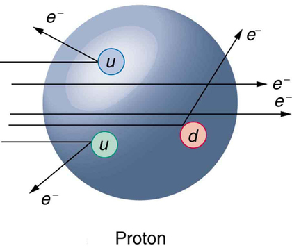
More recent and higher-energy experiments have produced jets of particles in collisions, highly suggestive of three quarks in a nucleon. Since the quarks are very tightly bound, energy put into separating them pulls them only so far apart before it starts being converted into other particles. More energy produces more particles, not a separation of quarks. Conservation of momentum requires that the particles come out in jets along the three paths in which the quarks were being pulled. Note that there are only three jets, and that other characteristics of the particles are consistent with the three-quark substructure.
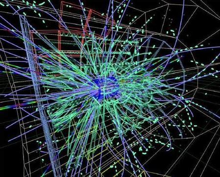
The quark model actually lost some of its early popularity because the original model with three quarks had to be modified. The up and down quarks seemed to compose normal matter as seen in Table , while the single strange quark explained strangeness. Why didn’t it have a counterpart? A fourth quark flavor calledcharm(c) was proposed as the counterpart of the strange quark to make things symmetric—there would be two normal quarks (u and d) and two exotic quarks (s and c). Furthermore, at that time only four leptons were known, two normal and two exotic. It was attractive that there would be four quarks and four leptons. The problem was that no known particles contained a charmed quark. Suddenly, in November of 1974, two groups (one headed by C. C. Ting at Brookhaven National Laboratory and the other by Burton Richter at SLAC) independently and nearly simultaneously discovered a new meson with characteristics that made it clear that its substructure is \(c\bar{c}\). It was called \(J\) by one group and psi (\(ψ\)) by the other and now is known as the \(J/ψ\) meson. Since then, numerous particles have been discovered containing the charmed quark, consistent in every way with the quark model. The discovery of the \(J/ψ\) meson had such a rejuvenating effect on quark theory that it is now called the November Revolution. Ting and Richter shared the 1976 Nobel Prize.
History quickly repeated itself. In 1975, the tau (\(τ\)) was discovered, and a third family of leptons emerged as seen in [link]). Theorists quickly proposed two more quark flavors calledtop(\(t\)) or truth andbottom(\(b\)) or beauty to keep the number of quarks the same as the number of leptons. And in 1976, the upsilon (\(Υ\)) meson was discovered and shown to be composed of a bottom and an antibottom quark or \(b\bar{b}\), quite analogous to the \(J/ψ\) being \(c\bar{c}\) as seen in Table . Being a single flavor, these mesons are sometimes called bare charm and bare bottom and reveal the characteristics of their quarks most clearly. Other mesons containing bottom quarks have since been observed. In 1995, two groups at Fermilab confirmed the top quark’s existence, completing the picture of six quarks listed in Table . Each successive quark discovery—first \(c\), then \(b\), and finally \(t\) —has required higher energy because each has higher mass. Quark masses in Table are only approximately known, because they are not directly observed. They must be inferred from the masses of the particles they combine to form.
As mentioned and shown in Figure , quarks carry another quantum number, which we callcolor.Of course, it is not the color we sense with visible light, but its properties are analogous to those of three primary and three secondary colors. Specifically, a quark can have one of three color values we callred(\(R\)),green(\(G\)), andblue(\(B\)) in analogy to those primary visible colors. Antiquarks have three values we callantiredorcyan(\(\bar{R}\)),antigreenormagenta(\(\bar{G}\)), andantiblueoryellow(\(\bar{B}\)) in analogy to those secondary visible colors. The reason for these names is that when certain visual colors are combined, the eye sees white. The analogy of the colors combining to white is used to explain why baryons are made of three quarks, why mesons are a quark and an antiquark, and why we cannot isolate a single quark. The force between the quarks is such that their combined colors produce white. This is illustrated in Figure . A baryon must have one of each primary color or RGB, which produces white. A meson must have a primary color and its anticolor, also producing white.
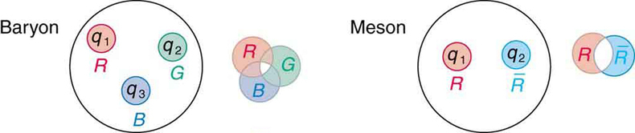
Why must hadrons be white? The color scheme is intentionally devised to explain why baryons have three quarks and mesons have a quark and an antiquark. Quark color is thought to be similar to charge, but with more values. An ion, by analogy, exerts much stronger forces than a neutral molecule. When the color of a combination of quarks is white, it is like a neutral atom. The forces a white particle exerts are like the polarization forces in molecules, but in hadrons these leftovers are the strong nuclear force. When a combination of quarks has color other than white, it exertsextremelylarge forces—even larger than the strong force—and perhaps cannot be stable or permanently separated. This is part of thetheory of quark confinement, which explains how quarks can exist and yet never be isolated or directly observed. Finally, an extra quantum number with three values (like those we assign to color) is necessary for quarks to obey the Pauli exclusion principle. Particles such as the \(Ω^−\), which is composed of three strange quarks, \(sss\), and the \(Δ^{++}\), which is three up quarks,uuu, can exist because the quarks have different colors and do not have the same quantum numbers. Color is consistent with all observations and is now widely accepted. Quark theory including color is calledquantum chromodynamics(QCD), also named by Gell-Mann.
Fundamental particles are thought to be one of three types—leptons, quarks, or carrier particles. Each of those three types is further divided into three analogous families as illustrated in Figure . We have examined leptons and quarks in some detail. Each has six members (and their six antiparticles) divided into three analogous families. The first family is normal matter, of which most things are composed. The second is exotic, and the third more exotic and more massive than the second. The only stable particles are in the first family, which also has unstable members.
![This figure shows three types of particles arranged in three rows. In the top row are leptons, in the middle row are quarks, and in the bottom row are carrier particles. The rows are divided into three columns, with the columns labeled family one, family two, and family three, from left to right. In family one are the electron and electron neutrino, the up and down quarks, and the photon and upsilon. In family two are the muon and muon neutrino, the strange and charmed quarks, and the W plus, W minus, and Z zero. In family three are the tau and tau neutrino, the top and bottom quarks, and gluons.](images/ch33/fig33-20-this-figure-shows-three-types-of-particl.jpg)
Always searching for symmetry and similarity, physicists have also divided the carrier particles into three families, omitting the graviton. Gravity is special among the four forces in that it affects the space and time in which the other forces exist and is proving most difficult to include in a Theory of Everything or TOE (to stub the pretension of such a theory). Gravity is thus often set apart. It is not certain that there is meaning in the groupings shown in Figure, but the analogies are tempting. In the past, we have been able to make significant advances by looking for analogies and patterns, and this is an example of one under current scrutiny. There are connections between the families of leptons, in that the \(τ\) decays into the \(μ\) and the \(μ\) into thee. Similarly for quarks, the higher families eventually decay into the lowest, leaving only u and d quarks. We have long sought connections between the forces in nature. Since these are carried by particles, we will explore connections between gluons, \(W^±\) and \(Z^0\), and photons as part of the search for unification of forces discussed inGUTs: The Unification of Forces.
1The lower of the \(±\) symbols are the values for antiquarks.
2\(B\) is baryon number, \(S\)is strangeness, \(c\) is charm, \(b\) is bottomness, \(t\) is topness.
3Values are approximate, are not directly observable, and vary with model.
4These two mesons are different mixtures, but each is its own antiparticle, as indicated by its quark composition.
5These two mesons are different mixtures, but each is its own antiparticle, as indicated by its quark composition.
6These two mesons are different mixtures, but each is its own antiparticle, as indicated by its quark composition.
7Antibaryons have the antiquarks of their counterparts. The antiproton \(\bar{p}\) is \(\bar{u}\bar{u}d\), for example.
8Baryons composed of the same quarks are different states of the same particle. For example, the \(Δ^+\) is an excited state of the proton.
📖 OpenStax College Physics, Section 33.5. openstax.org · CC BY 4.0
- State the grand unified theory.
- Explain the electroweak theory.
- Define gluons.
- Describe the principle of quantum chromodynamics.
- Define the standard model.
Present quests to show that the four basic forces are different manifestations of a single unified force follow a long tradition. In the 19th century, the distinct electric and magnetic forces were shown to be intimately connected and are now collectively called the electromagnetic force. More recently, the weak nuclear force has been shown to be connected to the electromagnetic force in a manner suggesting that a theory may be constructed in which all four forces are unified. Certainly, there are similarities in how forces are transmitted by the exchange of carrier particles, and the carrier particles themselves (the gauge bosons in [link]) are also similar in important ways. The analogy to the unification of electric and magnetic forces is quite good—the four forces are distinct under normal circumstances, but there are hints of connections even on the atomic scale, and there may be conditions under which the forces are intimately related and even indistinguishable. The search for a correct theory linking the forces, called theGrand Unified Theory (GUT), is explored in this section in the realm of particle physics. Frontiers of Physics expands the story in making a connection with cosmology, on the opposite end of the distance scale.
Figure is a Feynman diagram showing how the weak nuclear force is transmitted by the carrier particle \(Z^0\), similar to the diagrams in [link] and [link] for the electromagnetic and strong nuclear forces. In the 1960s, a gauge theory, calledelectroweak theory, was developed by Steven Weinberg, Sheldon Glashow, and Abdus Salam and proposed that the electromagnetic and weak forces are identical at sufficiently high energies. One of its predictions, in addition to describing both electromagnetic and weak force phenomena, was the existence of the \(W^+,W^−\), and \(Z^0\) carrier particles. Not only were three particles having spin 1 predicted, the mass of the \(W^+\) and \(W^−\) was predicted to be 81 \(GeV/c^2\), and that of the \(Z^0\) was predicted to be 90 \(GeV/c^2\). (Their masses had to be about 1000 times that of the pion, or about 100 \(GeV/c^2\), since the range of the weak force is about 1000 times less than the strong force carried by virtual pions.) In 1983, these carrier particles were observed at CERN with the predicted characteristics, including masses having the predicted values as seen in [link]. This was another triumph of particle theory and experimental effort, resulting in the 1984 Nobel Prize to the experiment’s group leaders Carlo Rubbia and Simon van der Meer. Theorists Weinberg, Glashow, and Salam had already been honored with the 1979 Nobel Prize for other aspects of electroweak theory.
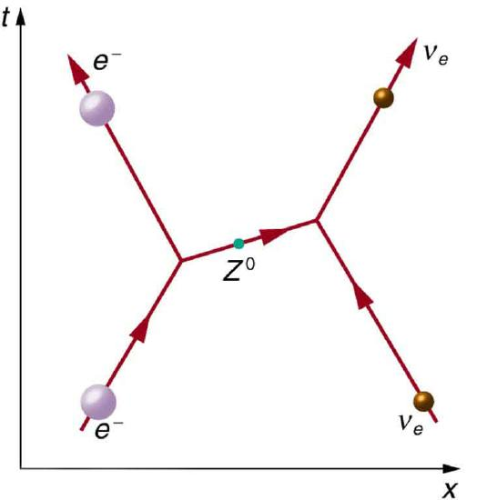
Although the weak nuclear force is very short ranged ( \(< 10^{–18} m\), its effects on atomic levels can be measured given the extreme precision of modern techniques. Since electrons spend some time in the nucleus, their energies are affected, and spectra can even indicate new aspects of the weak force, such as the possibility of other carrier particles. So systems many orders of magnitude larger than the range of the weak force supply evidence of electroweak unification in addition to evidence found at the particle scale.
Gluons(\(g\)) are the proposed carrier particles for the strong nuclear force, although they are not directly observed. Like quarks, gluons may be confined to systems having a total color of white. Less is known about gluons than the fact that they are the carriers of the weak and certainly of the electromagnetic force. QCD theory calls for eight gluons, all massless and all spin 1. Six of the gluons carry a color and an anticolor, while two do not carry color, as illustrated in Figure \(\PageIndex{2a}\). There is indirect evidence of the existence of gluons in nucleons. When high-energy electrons are scattered from nucleons and evidence of quarks is seen, the momenta of the quarks are smaller than they would be if there were no gluons. That means that the gluons carrying force between quarks also carry some momentum, inferred by the already indirect quark momentum measurements. At any rate, the gluons carry color charge and can change the colors of quarks when exchanged, as seen in Figure \(\PageIndex{2b}\). In the figure, a red down quark interacts with a green strange quark by sending it a gluon. That gluon carries red away from the down quark and leaves it green, because it is an \(R\bar{G}\) (red-antigreen) gluon. (Taking antigreen away leaves you green.) Its antigreenness kills the green in the strange quark, and its redness turns the quark red.
![The first image shows eight circles representing gluons. The first gluon is colored red and anti green, the second gluon is colored green and anti red, the third gluon is colored blue and anti red, the fourth gluon is colored red and anti blue, the fifth gluon is colored green and anti blue, and the sixth gluon is colored blue and anti green. The last two gluons are white. The second image shows a Feynman diagram in which time proceeds in along the vertical y axis and distance along the horizontal x axis. A red down quark and a green strange quark are approaching each other. They exchange a red and anti green gluon, then move apart, with the red down quark having changed to a green down quark and the green strange quark having changed to a red strange quark.](images/ch33/fig33-22-the-first-image-shows-eight-circles-repr.jpg)
The strong force is complicated, since observable particles that feel the strong force (hadrons) contain multiple quarks. Figure shows the quark and gluon details of pion exchange between a proton and a neutron as illustrated earlier in [link] and [link]. The quarks within the proton and neutron move along together exchanging gluons, until the proton and neutron get close together. As the u quark leaves the proton, a gluon creates a pair of virtual particles, a \(d\) quark and a \(d^−\) antiquark. The \(d\) quark stays behind and the proton turns into a neutron, while the \(u\)and \(\bar{d}\) move together as a \(π^+\) ([link] confirms the ud− composition for the π+.) The d− annihilates a d quark in the neutron, the u joins the neutron, and the neutron becomes a proton. A pion is exchanged and a force is transmitted.
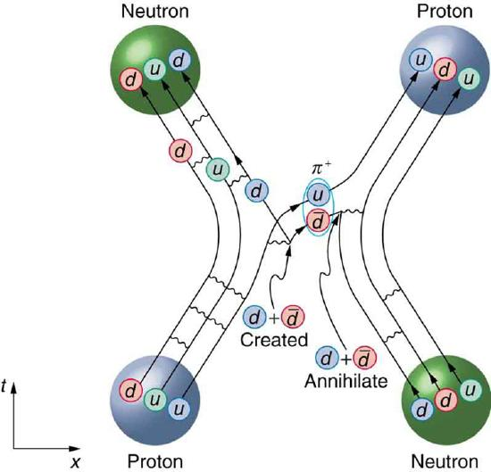
It is beyond the scope of this text to go into more detail on the types of quark and gluon interactions that underlie the observable particles, but the theory (quantum chromodynamicsor QCD) is very self-consistent. So successful have QCD and the electroweak theory been that, taken together, they are called theStandard Model. Advances in knowledge are expected to modify, but not overthrow, the Standard Model of particle physics and forces.
MAKING CONNECTIONS: UNIFICATION OF FORCES
Grand Unified Theory (GUT) is successful in describing the four forces as distinct under normal circumstances, but connected in fundamental ways. Experiments have verified that the weak and electromagnetic force become identical at very small distances and provide the GUT description of the carrier particles for the forces. GUT predicts that the other forces become identical under conditions so extreme that they cannot be tested in the laboratory, although there may be lingering evidence of them in the evolution of the universe. GUT is also successful in describing a system of carrier particles for all four forces, but there is much to be done, particularly in the realm of gravity.
How can forces be unified? They are definitely distinct under most circumstances, for example, being carried by different particles and having greatly different strengths. But experiments show that at extremely small distances, the strengths of the forces begin to become more similar. In fact, electroweak theory’s prediction of the \(W^+, W^−\), and \(Z^0\) carrier particles was based on the strengths of the two forces being identical at extremely small distances as seen in Figure . As discussed in case of the creation of virtual particles for extremely short times, the small distances or short ranges correspond to the large masses of the carrier particles and the correspondingly large energies needed to create them. Thus, the energy scale on the horizontal axis of Figure corresponds to smaller and smaller distances, with 100 GeV corresponding to approximately, \(10^{−18}m\) for example. At that distance, the strengths of the EM and weak forces are the same. To test physics at that distance, energies of about 100 GeV must be put into the system, and that is sufficient to create and release the \(W^+, W^−\), and \(Z^0\) carrier particles. At those and higher energies, the masses of the carrier particles becomes less and less relevant, and the \(Z^0\) in particular resembles the massless, chargeless, spin 1 photon. In fact, there is enough energy when things are pushed to even smaller distances to transform the, and \(Z^0\) into massless carrier particles more similar to photons and gluons. These have not been observed experimentally, but there is a prediction of an associated particle called theHiggs boson. The mass of this particle is not predicted with nearly the certainty with which the mass of the \(W^+,W^−\), and \(Z^0\) particles were predicted, but it was hoped that the Higgs boson could be observed at the now-canceled Superconducting Super Collider (SSC). Ongoing experiments at the Large Hadron Collider at CERN have presented some evidence for a Higgs boson with a mass of 125 GeV, and there is a possibility of a direct discovery during 2012. The existence of this more massive particle would give validity to the theory that the carrier particles are identical under certain circumstances.
![The figure shows a graph with the strength of four basics forces plotted along the y axis and energy plotted along the x axis in giga electron volts. Near zero giga electron volts, the difference in forces is large. Gravity is the weakest force, followed by the weak force, then the electromagnetic force, and finally the strong force is the strongest. At about one hundred giga electron volts, the curves for the electromagnetic and weak force combine to become the electroweak force, but gravity remains weaker and the strong force remains stronger. Near ten to the fifteen giga electron volts, the electroweak force combines with the strong force at a point labeled G U T. Finally, at about ten to the nineteenth giga electron volts, gravity is combined with the electroweak plus strong force at a point labeled T O E.](images/ch33/fig33-24-the-figure-shows-a-graph-with-the-streng.jpg)
The small distances and high energies at which the electroweak force becomes identical with the strong nuclear force are not reachable with any conceivable human-built accelerator. At energies of about \(10^{14}GeV\) (16,000 J per particle), distances of about \(10^{−30}m\) can be probed. Such energies are needed to test theory directly, but these are about \(10^{10}\) higher than the proposed giant SSC would have had, and the distances are about \(10^{−12}\) smaller than any structure we have direct knowledge of. This would be the realm of various GUTs, of which there are many since there is no constraining evidence at these energies and distances. Past experience has shown that any time you probe so many orders of magnitude further (here, about \(10^{12}\)), you find the unexpected. Even more extreme are the energies and distances at which gravity is thought to unify with the other forces in a TOE. Most speculative and least constrained by experiment are TOEs, one of which is calledSuperstring theory. Superstrings are entities that are \(10^{−35}m\) in scale and act like one-dimensional oscillating strings and are also proposed to underlie all particles, forces, and space itself.
At the energy of GUTs, the carrier particles of the weak force would become massless and identical to gluons. If that happens, then both lepton and baryon conservation would be violated. We do not see such violations, because we do not encounter such energies. However, there is a tiny probability that, at ordinary energies, the virtual particles that violate the conservation of baryon number may exist for extremely small amounts of time (corresponding to very small ranges). All GUTs thus predict that the proton should be unstable, but would decay with an extremely long lifetime of about \(10^{31}y\). The predicted decay mode is
which violates both conservation of baryon number and electron family number. Although \(10^{31}y\) is an extremely long time (about \(10^{21}\) times the age of the universe), there are a lot of protons, and detectors have been constructed to look for the proposed decay mode as seen in Figure . It is somewhat comforting that proton decay has not been detected, and its experimental lifetime is now greater than \(5×10^{32}y\). This does not prove GUTs wrong, but it does place greater constraints on the theories, benefiting theorists in many ways.
From looking increasingly inward at smaller details for direct evidence of electroweak theory and GUTs, we turn around and look to the universe for evidence of the unification of forces. In the 1920s, the expansion of the universe was discovered. Thinking backward in time, the universe must once have been very small, dense, and extremely hot. At a tiny fraction of a second after the fabled Big Bang, forces would have been unified and may have left their fingerprint on the existing universe. This, one of the most exciting forefronts of physics, is the subject of Frontiers of Physics.
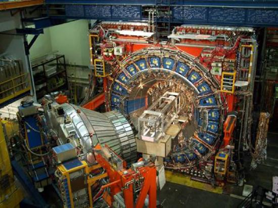
📖 OpenStax College Physics, Section 33.6. openstax.org · CC BY 4.0
| Section | Title |
|---|---|
| 33.1 | 33.1: The Yukawa Particle and the Heisenberg Uncertainty Principle Revisited |
| 33.2 | 33.2: The Four Basic Forces |
| 33.3 | 33.3: Accelerators Create Matter from Energy |
| 33.4 | 33.4: Particles, Patterns, and Conservation Laws |
| 33.5 | 33.5: Quarks - Is That All There Is? |
| 33.6 | 33.6: GUTs - The Unification of Forces |